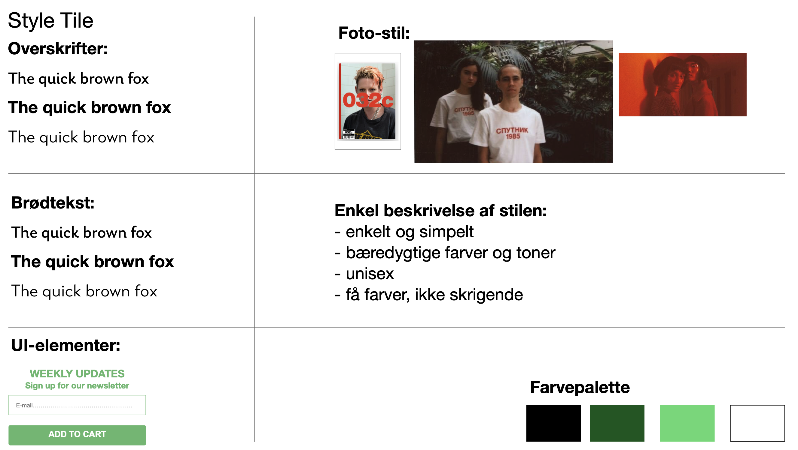

Efter min research, lavede jeg først et moodboard - en samling af fotos fra nettet, som inspirerede mig. Herefter lavede jeg et style tile, som viser hvilke typografier, farver, ui-elementer, fotostile og en kort beskrivelse af den stil jeg vil bruge i mit design.
Jeg fandt hurtigt ud af, at websitet skulle hedde 'New World', da det et en webshop som sælger t-shirts og magasiner med fokus på bæredygtighed og gender neutrality - heraf en 'ny verden'. Jeg tegnede logo, illustrationer og t-shirts i Adobe Illustrator, og satte logoet ind på fotos jeg selv har taget. Forside-bladet er et blad, jeg selv har lavet, som jeg syntes passede godt ind i stilen.
Herefter designede jeg websiden på Adobe XD. Det skulle være simpelt og overskueligt, og udstråle bæredygtighed.
Jeg har lært, at lave prototyper i Adobe XD, og at designe et helstøbt website som en prototype. Jeg har også lært, at tænke i brugervenlighed, når jeg designer websites mm.
Pitch for endeligt prototype.
Jeg starter min pitch med, at komme ind på mine indsigter og hvad jeg kom frem til gennem desk research, observationsresearch, interviewresearch og survey om e-handel og salg af t-shirts.
Bagefter kommer jeg lidt tættere ind på, hvad mit koncept og målgruppe er.
Herefter vil jeg snakke om min designproces. Her kommer jeg ind på mit moodboard og style tile, og viser mine skitser.
Derefter valgte jeg at lave en kort gennemgang af mit design.
Til slut, kommer jeg ind på mine test af websitet, og reflekterer og konkluderer ud fra opgavens proces og tests.
Jeg har i dette forløb lært, at bruge de forskellige research-metoder til at indsamle data om for eksempel et website. Jeg har lært at bruge Adobe XD, til at lave prototyper.
Herudover har jeg lært, hvad copy- og microcopy betyder, og hvordan man bruger det på online platforme.
Jeg har lært, at dokumentere mine designløsninger, og dermed bruge dem til, at lave en god pitch for det færdige produkt.